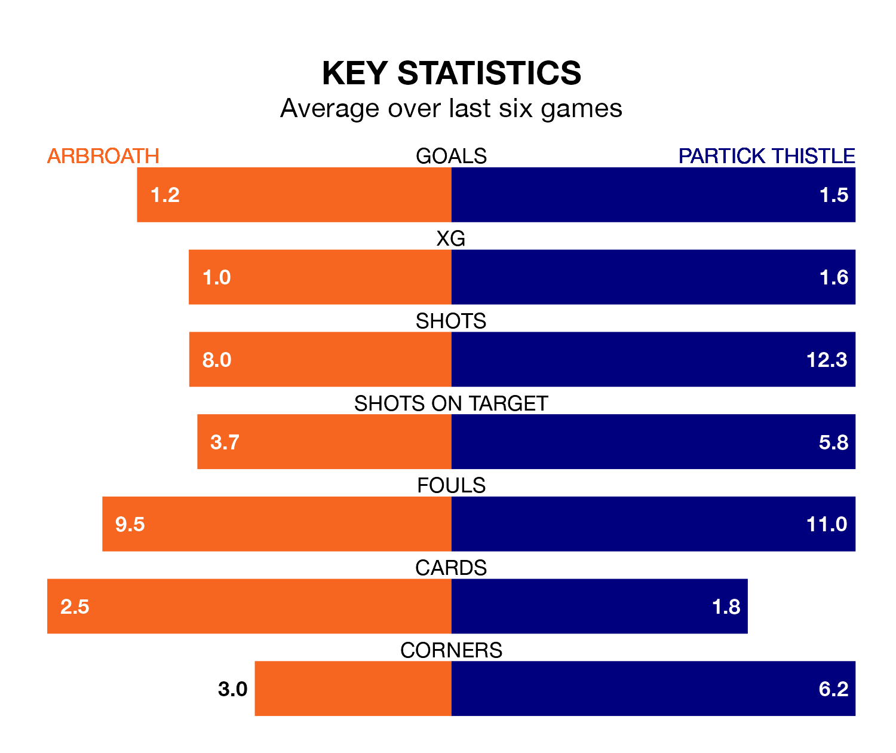

Relegation candidates Arbroath face a challenge against high-flying Partick Thistle at Gayfield Park on Saturday.
Arbroath are rooted to the bottom of the Championship table, and have picked up six wins and five draws in their 28 games to date.
Thistle, meanwhile, are third in the standings with 43 points, having won 11 and drawn 10 of their first 29 matches, and are 15 points behind table-toppers Dundee United.
With 55 goals in 29 games so far this season, Partick Thistle are the league's second-highest scorers with 1.9 goals per game. But they are conceding more than average too, letting in 49 goals at a rate of 1.7 per game.
Arbroath, meanwhile, are below average scorers, with 1.1 goals per game, compared to a league average of 1.4. They have conceded 2.3 goals per game.
In Brian Graham, Thistle have the league's sharpest shooter so far this season. He has notched 17 goals in 27 appearances.
His goal rate of one every 131 minutes is quicker than that of Jermaine Hylton, the home side's top scorer with a goal every 201 minutes, and a total of six goals in 17 games.
In the last 10 years, Arbroath and Partick Thistle have played each other on 15 occasions. Arbroath won five of them, Partick Thistle six, and they drew four times.
On average, Arbroath scored 1.1 goals and Thistle 1.3 in those matches.
Their last meeting was on January 6, when Partick Thistle won 4-0 at home.
Arbroath are in disappointing form in the Championship, with one win and two draws from their last six games.
And also with a win and two draws over that period, the visitors' form is identical – they have both taken five points from 18.
Arbroath's last match was on March 16, a 5-2 loss against Airdrieonians, with David Gold and Ryan Dow getting the goals for Arbroath.
Partick Thistle beat Greenock Morton 2-1 last time out, also on March 16, with Graham and Scott Robinson on the scoresheet.
Saturday's match will be refereed by Steven Kirkland, who has taken charge of five Championship games so far this season, issuing two red cards and booking 23 players. He has awarded one penalty.
The last Partick Thistle game Kirkland refereed was the 3-2 win at home against Queen's Park on January 2. He is yet to oversee a match featuring Arbroath this season.
Updated: 10:19 (UTC), 22/03/24